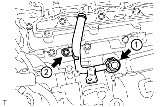
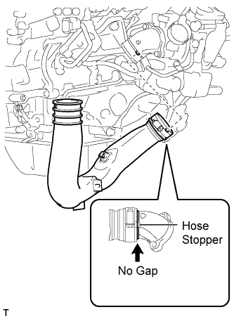
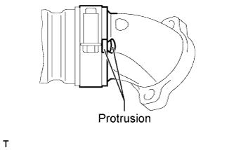
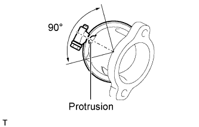
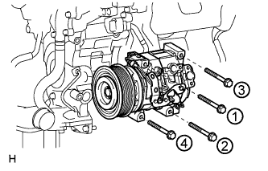
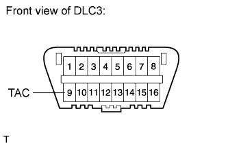

ENGINE ASSEMBLY > INSTALLATION |
| 1. INSTALL FRONT ENGINE MOUNTING INSULATOR LH |
 |
Install the mounting insulator with the nut.
| 2. INSTALL FRONT ENGINE MOUNTING INSULATOR RH |
 |
Install the mounting insulator with the nut.
Connect the vacuum hose.
| 3. INSTALL NO. 1 AND NO. 2 ENGINE HANGER |
 |
Install the No. 1 and No. 2 engine hangers to the cylinder head RH and LH.
| Item | Part No. |
| No. 1 engine hanger | 12281-51040 |
| No. 2 engine hanger | 12282-51040 |
| Bolt | 91671-80825 |
| 4. REMOVE ENGINE STAND |
Attach an engine sling device and hang the engine with a chain block.
Lift the engine, and remove it from the engine stand.
| 5. INSTALL DRIVE PLATE AND RING GEAR SUB-ASSEMBLY (for Automatic Transmission) |
 |
Install the rear crankshaft balancer weight labeled C, ring gear labeled B and rear drive plate spacer labeled A with 8 new bolts.
 |
Using a wrench, hold the crankshaft.
 |
Uniformly install and tighten the 8 bolts in the sequence shown in the illustration.
| 6. INSTALL FLYWHEEL SUB-ASSEMBLY (for Manual Transmission) |
 |
Temporarily install the flywheel with 8 new bolts.
|
Using a wrench, hold the crankshaft.
Uniformly install and tighten the 8 bolts in the sequence shown in the illustration.
| 7. INSTALL CLUTCH DISC ASSEMBLY (for Manual Transmission) |
 |
Insert SST into the clutch disc, then insert the clutch disc into the flywheel.
| 8. INSTALL CLUTCH COVER ASSEMBLY (for Manual Transmission) |
 |
Align the matchmark on the clutch cover with the one on the flywheel.
In the order shown in the illustration, temporarily install the 8 bolts starting from the bolt located near the knock pin on the top.
Check that the disc is in the center by lightly moving SST up and down, and left and right.
Evenly tighten the bolts by following the order shown in the illustration.
| 9. INSTALL ENGINE ASSEMBLY |
 |
Slowly lower the engine into the engine compartment.
Install the 4 bolts to the front mounting insulator RH and LH.
Remove the 4 bolts and No. 1 and No. 2 engine hangers.
| 10. INSTALL CLUTCH RELEASE CYLINDER TO FLEXIBLE HOSE TUBE (for Manual Transmission) |
 |
Install the tube with the bolt.
| 11. INSTALL MANUAL TRANSMISSION UNIT ASSEMBLY |
Install the manual transmission unit assembly (Click here).
| 12. INSTALL AUTOMATIC TRANSMISSION ASSEMBLY |
Install the automatic transmission assembly (Click here).
| 13. INSTALL NO. 2 INTAKE MANIFOLD |
 |
Install a new gasket and the No. 2 intake manifold with the 9 bolts.
| 14. INSTALL NO. 1 INTAKE MANIFOLD |
 |
Install a new gasket and the No. 1 intake manifold with the 9 bolts.
| 15. INSTALL NO. 1 WATER BY-PASS PIPE |
 |
Temporarily install a new gasket and the No. 1 water by-pass pipe with the union bolt and bolt.
Tighten the union bolt and bolt in the order shown in the illustration.
| 16. INSTALL FUEL COOLER ASSEMBLY |
 |
Install the fuel cooler with the 2 bolts.
| 17. CONNECT NO. 6 WATER BY-PASS HOSE |
 |
| 18. INSTALL NO. 4 NOZZLE LEAKAGE PIPE |
 |
Temporarily install a new gasket and the No. 4 nozzle leakage pipe with the union bolt and bolt.
Tighten the union bolt and bolt in the order shown in the illustration.
Connect the No. 2 fuel hose to the fuel cooler.
| 19. INSTALL NO. 3 NOZZLE LEAKAGE PIPE |
 |
Temporarily install a new gasket and the No. 3 nozzle leakage pipe with the union bolt and bolt.
Tighten the union bolt and bolt in the order shown in the illustration.
Connect the No. 1 fuel hose to the fuel cooler.
| 20. INSTALL EGR COOLER INSULATOR (w/ EGR System) |
 |
| 21. INSTALL EGR VALVE ASSEMBLY WITH EGR COOLER (w/ EGR System) |
 |
Connect the No. 5 water by-pass hose to the water by-pass outlet.
 |
Install 2 new gaskets and the EGR valve with EGR cooler with the 6 bolts labeled A and 4 bolts labeled B shown in the illustration.
| 22. INSTALL EGR PIPE INSULATOR (w/ EGR System) |
 |
Install the EGR pipe insulator with the 2 bolts.
| 23. INSTALL INTAKE MANIFOLD INSULATOR (w/ EGR System) |
 |
| 24. INSTALL NO. 3 INTAKE MANIFOLD |
 |
Set 2 new gaskets to the No. 1 and No. 2 intake manifolds.
Install the No. 3 intake manifold with the 16 bolts.
| Item | Length |
| Bolt A | 25 mm (0.984 in.) |
| Bolt B | 70 mm (2.76 in.) |
| 25. CONNECT NO. 2 ENGINE WIRE |
 |
Connect the No. 2 engine wire with the 3 bolts.
Attach the 2 wire harness clamps.
| 26. INSTALL INTAKE PIPE |
 |
w/ EGR System:
Install 2 new gaskets and the intake pipe with the 6 bolts and 2 nuts.
 |
w/o EGR System:
Install a new gasket and the intake pipe with the 4 bolts and 2 nuts.
| 27. INSTALL NO. 2 INTAKE MANIFOLD INSULATOR |
 |
| 28. INSTALL NO. 1 INTAKE MANIFOLD INSULATOR |
 |
| 29. INSTALL COMMON RAIL ASSEMBLY RH |
 |
Install the common rail with the 2 bolts.
| 30. INSTALL INJECTION PIPE RH |
 |
Using a union nut wrench, install the 4 injection pipes.
 |
 |
Install the 4 injection pipe clamps with the 2 nuts.
| 31. INSTALL NO. 5 INJECTION PIPE SUB-ASSEMBLY |
 |
Temporarily install the No. 5 injection pipe by hand.
 |
Temporarily install the used gasket and No. 2 fuel pipe with the nut, bolt and union bolt.
 |
Temporarily install the No. 2 injection pipe clamp with the bolt.
|
Using a union nut wrench, tighten the No. 5 injection pipe ends.
|
|
Remove the bolt and No. 2 injection pipe clamp.
|
Remove the union bolt and gasket.
Remove the bolt, nut and No. 2 fuel pipe.
| 32. CONNECT FUEL PUMP MOTOR WIRE |
 |
Install the fuel pump motor wire bracket to the No. 3 intake manifold with the bolt.
Connect the connector to the fuel supply pump.
| 33. INSTALL FUEL FILTER TO INJECTION PUMP FUEL PIPE SUB-ASSEMBLY |
 |
Install the fuel filter to injection pump fuel pipe with the bolt.
Connect the 2 hoses to the fuel pipe.
| 34. INSTALL COMMON RAIL ASSEMBLY LH |
 |
Install the common rail with the 2 bolts.
| 35. INSTALL INJECTION PIPE LH |
 |
Using a union nut wrench, install the 4 injection pipes.
|
 |
Install the 4 injection pipe clamps with the 2 nuts.
| 36. CONNECT NO. 6 INJECTION PIPE SUB-ASSEMBLY |
 |
w/ EGR System:
Temporarily install the No. 6 injection pipe to the common rail LH and RH.
Install the 2 No. 2 injection pipe clamps with the 2 nuts.
Using a union nut wrench, tighten the No. 6 injection pipe ends.
|
 |
w/o EGR System:
Temporarily install a new No. 6 injection pipe to the common rail LH and RH.
Install the bracket to the No. 3 intake manifold with the bolt.
Install the No. 2 injection pipe clamp with the nut.
Using a union nut wrench, tighten the No. 6 injection pipe ends.
|
| 37. INSTALL NO. 2 FUEL PIPE SUB-ASSEMBLY |
 |
Temporarily install a new gasket and the No. 2 fuel pipe with the union bolt, nut and bolt.
Tighten the union bolt, nut and bolt in the order shown in the illustration.
Install the No. 2 injection pipe clamp with the bolt.
Connect the fuel hose to the No. 5 nozzle leakage pipe.
| 38. CONNECT ENGINE WIRE |
Rear Side:
 |
Install the glow plug wire harness with the nut labeled A.
Connect the 2 common rail connectors.
Install the engine wire harness protector with the 2 bolts labeled B.
Install the 2 ground wires with the 2 bolts labeled C.
LH Side:
 |
Install the engine wire protector with the 2 bolts labeled A.
Connect the 8 connectors.
Install the engine wire harness bracket with the bolt labeled B.
for RHD:
Connect the wire harness with the wire harness clamp holder labeled C.
 |
Attach the 3 wire harness clamps and connect the 2 connectors.
 |
Connect the 4 connectors to the injection driver.
Install the ground wire with the bolt.
Connect the wire harness holder to the relay block.
Connect the 4 connectors to the relay block.
Connect the wire harness with the wire harness clamp holder.
 |
for RHD:
Connect the wire harness with the wire harness clamp holder.
for RHD:
Connect the ECM connector to the ECM.
for RHD:
Attach the wire harness tab labeled A to the relay block.
Connect the 4 connectors to the relay block.
 |
Connect the generator positive (+) cable to the body panel with the 2 clamps.
Attach the generator positive (+) cable holder to the relay block, and install the cable to the relay block with the nut.
 |
Connect the wire harness with the wire harness clamp holder labeled B, and attach the ground wire clamp to the relay block side labeled A.
Install the ground wire to the body panel with the bolt.
RH Side:
 |
w/ Winch:
Install the ground wire with the bolt.
 |
Install the engine wire harness protector with the 3 bolts labeled A.
Connect the 7 connectors.
Install the wire harness bracket with the bolt labeled B.
Install the glow plug wire harness with the nut labeled C.
 |
for RHD:
Connect the wire harness with the wire harness holder.
 |
for LHD:
Connect the wire harness with the wire harness clamp holder.
for LHD:
Connect the ECM connector to the ECM.
for LHD:
Attach the wire harness tab labeled A to the relay block.
for LHD:
Connect the 4 connectors to the relay block.
| 39. INSTALL NO. 4 WATER BY-PASS PIPE |
 |
w/ EGR System:
Connect the 4 water hose ends, and temporarily install the No. 4 water by-pass pipe with the 2 bolts and nut.
First tighten the 2 bolts and then tighten the nut.
 |
w/o EGR System:
Connect the 3 water hose ends, and temporarily install the No. 4 water by-pass pipe with the 2 bolts and nut.
First tighten the 2 bolts and then tighten the nut.
| 40. INSTALL NO. 3 WATER BY-PASS PIPE (w/o Viscous Heater) |
 |
Connect the 2 water hose ends, and install the No. 3 water by-pass pipe with the 2 bolts.
| 41. CONNECT FUEL HOSE |
 |
| 42. INSTALL NO. 1 AIR CLEANER PIPE SUB-ASSEMBLY |
 |
Connect the No. 1 air cleaner pipe to the No. 1 intake air connector pipe.
Install the pipe with the bolt.
Tighten the hose clamp.
| 43. INSTALL HEATER WATER PIPE SUB-ASSEMBLY (w/ Viscous Heater) |
 |
Connect the 4 water hose ends, and install the water pipe with the 4 bolts.
| 44. INSTALL NO. 2 INTAKE AIR CONNECTOR PIPE |
 |
Install the No. 2 intake air connector pipe to the No. 2 inlet compressor elbow.
 |
Install the bolt of the air pipe.
Tighten the hose clamp on the elbow side.
 |
 |
 |
Connect the vacuum hose.
| 45. ADJUST COMPRESSOR OIL |
When replacing the compressor and magnetic clutch with a new one, gradually discharge the refrigerant gas from the service valve, and drain the following amount of oil from the new compressor and magnetic clutch before installation.
| 46. INSTALL COOLER COMPRESSOR ASSEMBLY |
 |
Temporarily install the cooler compressor with the 4 bolts.
Tighten the 4 bolts in the order shown in the illustration.
 |
Attach the 3 wire harness clamps and connect the 4 connectors.
| 47. INSTALL SUCTION HOSE SUB-ASSEMBLY |
 |
Remove the attached vinyl tape from the cooler refrigerant suction hose.
Sufficiently apply compressor oil to a new O-ring and the fitting surface of the cooler compressor.
Install the O-ring to the suction hose.
Connect the suction hose to the cooler compressor with the bolt.
| 48. INSTALL NO. 1 COOLER REFRIGERANT DISCHARGE HOSE |
 |
Remove the attached vinyl tape from the discharge hose.
Sufficiently apply compressor oil to a new O-ring and the fitting surface of the cooler compressor.
Install the O-ring to the discharge hose.
Connect the discharge hose to the cooler compressor with the bolt.
| 49. INSTALL NO. 2 AIR CLEANER PIPE SUB-ASSEMBLY |
 |
Connect the No. 2 air cleaner pipe to the No. 2 intake air connector pipe.
Connect the ventilation hose to the oil separator.
Install the pipe with the bolt.
Tighten the hose clamp.
| 50. INSTALL NO. 2 AIR TUBE ASSEMBLY |
 |
Apply a light coat of washer fluid to a new O-ring, and install it to the No. 2 air tube.
Install the No. 2 air tube with the bolt.
| 51. INSTALL NO. 4 AIR TUBE |
 |
Install the No. 4 air tube with the bolt.
Tighten the hose clamp.
 |
Install the suction hose with the bolt.
| 52. INSTALL NO. 2 AIR HOSE |
 |
Connect the No. 2 air hose with the hose clamp.
| 53. INSTALL NO. 1 AIR TUBE ASSEMBLY |
 |
Apply a light coat of washer fluid to a new O-ring, and install it to the No. 1 air tube.
Install the No. 1 air tube with the bolt.
| 54. INSTALL NO. 3 AIR TUBE |
 |
Install the No. 3 air tube with the bolt.
Tighten the hose clamp.
 |
Install the wire harness bracket with the bolt.
 |
Install the ground wire with the nut, and attach the wire harness clamp.
| 55. INSTALL NO. 1 AIR HOSE |
 |
Connect the No. 1 air hose with the hose clamp.
| 56. INSTALL DIESEL THROTTLE BODY ASSEMBLY LH |
 |
Install a new gasket to the intake pipe.
Install the throttle body with the 2 bolts and 2 nuts.
Connect the throttle position sensor connector.
Connect the throttle motor connector.
| 57. INSTALL NO. 3 INTERCOOLER SUPPORT BRACKET |
 |
Install the bracket with the 2 bolts.
 |
for Manual Transmission:
Connect the clutch tube to release cylinder 2 way with the bolt.
Check that the union nut is tightened to the specified torque.
| 58. INSTALL NO. 1 GAS FILTER |
 |
Install the gas filter.
Connect the hose to the intake pipe.
| 59. INSTALL TUBE CONNECTOR TO FLEXIBLE HOSE TUBE (for Manual Transmission) |
 |
Temporarily install the flare nut of the tube connector to flexible hose tube to the clutch tube to release cylinder 2 way by hand.
 |
Temporarily install the tube connector to flexible hose tube with the 2 bolts.
Tighten the bolt labeled A.
| 60. INSTALL AIR TUBE SUB-ASSEMBLY LH |
 |
Install the air tube to the throttle body.
Align the embossed mark of the throttle body with the paint mark of the No. 4 air hose.
 |
Tighten the hose clamp so that it is 7 to 11 mm (0.276 to 0.433 in.) from the end of the hose as shown in the illustration.
| 61. INSTALL CLUTCH HOSE (for Manual Transmission) |
 |
Connect the clutch hose to the air tube with the bolt labeled A.
Temporarily install the clutch hose to the clutch master cylinder tube to flexible hose tube and tube connector to flexible hose tube, and fix it in place with the 2 clips.
Tighten the bolt labeled B.
Tighten the flexible hose tube.
 |
Using a 10 mm union nut wrench, tighten the 2 flare nuts of the flexible hose tube.
 |
Using a 10 mm union nut wrench, tighten the flare nut of the flexible hose tube.
| 62. INSTALL DIESEL THROTTLE BODY ASSEMBLY RH |
 |
Install a new gasket to the intake pipe.
Install the throttle body with the 2 bolts and 2 nuts.
Connect the throttle position sensor connector.
Connect the throttle motor connector.
| 63. INSTALL AIR TUBE SUB-ASSEMBLY RH |
 |
Install the air tube to the throttle body.
Align the embossed mark of the throttle body with the paint mark of the No. 4 air hose.
|
Tighten the hose clamp so that it is 7 to 11 mm (0.276 to 0.433 in.) from the end of the hose as shown in the illustration.
| 64. INSTALL NO. 2 ENGINE OIL LEVEL DIPSTICK GUIDE |
 |
Apply a light coat of engine oil to a new O-ring.
Install the O-ring to the No. 2 engine oil level dipstick guide.
Install the No. 2 engine oil level dipstick guide with the 2 bolts.
Connect the ventilation hose to the cylinder head cover RH.
 |
Connect the wire harness clamp to the No. 2 engine oil level dipstick guide bracket.
| 65. CONNECT WATER HOSE SUB-ASSEMBLY |
 |
| 66. INSTALL INTERCOOLER ASSEMBLY |
 |
Install a new gasket to the air tube RH.
 |
Install a new gasket to the air tube LH.
 |
Align the No. 1 and No. 2 air hoses and intercooler pipes and connect them, and install the intercooler with the 2 bolts and 2 nuts labeled A in the illustration.
Temporarily install the 4 nuts labeled B in the illustration.
Tighten the air tube LH and RH with the 4 nuts labeled B shown in the illustration.
 |
Connect the vacuum hose, intake air temperature sensor connector and turbo pressure sensor connector.
 |
Tighten the clamp of the No. 2 air hose.
 |
Tighten the clamp of the No. 1 air hose.
| 67. CONNECT FUEL TUBE |
 |
Install new No. 1 and No. 3 fuel tube clamps.
Connect the 3 fuel tubes to the clamps.
| 68. CONNECT FRONT DIFFERENTIAL BREATHER TUBE |
| 69. ADD ENGINE OIL |
Add fresh oil.
| Oil Grade | Oil Viscosity (SAE) |
| G-DLD-1, API CF-4, API CF or ACEA B1 (You may also use API CE or CD) | - 5W-30 - 10W-30 - 15W-40 - 20W-50 (5W-30 is best choice for fuel economy and good starting in cold weather). |
| Item | Specified Condition |
| Drain and refill with oil filter change | 9.0 liters (9.5 US qts, 8.0 Imp. qts) |
| Drain and refill without oil filter change | 8.0 liters (8.5 US qts, 7.0 Imp. qts) |
| Dry fill | 9.7 liters (10.3 US qts, 8.5 Imp. qts) |
Install the oil filler cap.
| 70. INSTALL RADIATOR ASSEMBLY |
 |
Install the radiator with the 4 bolts.
| 71. CONNECT RADIATOR SIDE DEFLECTOR LH |
 |
Install the side deflector with the 4 clips.
| 72. CONNECT RADIATOR SIDE DEFLECTOR RH (for Manual Transmission) |
 |
Install the deflector with the 4 clips.
| 73. INSTALL TRANSMISSION OIL COOLER AIR DUCT (for Automatic Transmission) |
 |
Install the oil cooler air duct with the 4 bolts.
| 74. INSTALL FRONT BUMPER COVER |
 |
w/ Headlight Cleaner System:
Connect the headlight cleaner hose.
w/o TOYOTA Parking Assist-sensor System, w/o Fog Light:
Attach the 10 claws to install the bumper cover.
w/ TOYOTA Parking Assist-sensor System or w/ Fog Light:
Connect the No. 4 engine room wire connector and attach the 10 claws to install the bumper cover.
Install the 3 clips, 4 screws and 4 bolts.

Using a T30 "TORX" socket, install the 6 screws.

| 75. INSTALL RADIATOR GRILLE |
 |
Attach the 2 clips and 8 claws to install the radiator grille.
Install the 3 screws.
| 76. INSTALL FRONT BUMPER WINCH COVER (w/ Winch) |
| 77. INSTALL FAN PULLEY |
| 78. INSTALL FAN SHROUD WITH FAN |
Install the shroud together with the fluid coupling fan between the radiator and engine components.
 |
Temporarily install the fluid coupling fan to the fan bracket with the 4 nuts.
 |
Attach the shroud claws to the radiator.
Install the shroud with the 2 bolts.
|
Tighten the 4 nuts of the fluid coupling fan.
| 79. INSTALL OIL COOLER TUBE (for Automatic Transmission) |
 |
Temporarily install the oil cooler tube to the fan shroud with the bolt labeled A. Install the bolt labeled B. Then tighten the bolt labeled A to the specified torque.
 |
Connect the inlet No. 4 oil cooler hose as shown in the illustration.
 |
Connect the inlet No. 2 and No. 3 oil cooler hoses as shown in the illustration.
 |
Connect the inlet and outlet No. 1 oil cooler hoses as shown in the illustration.
Pass the hose through the flexible hose clamp and close the clamp shown in the illustration.
| 80. INSTALL V-RIBBED BELT |
 |
Attach a wrench to the V-ribbed belt tensioner bracket and turn the wrench clockwise.
 |
Install the V-ribbed belt as shown in the illustration.
 |
Check that the belt fits properly in the ribbed grooves.
| 81. INSTALL NO. 3 IDLER PULLEY (w/ Viscous Heater) |
 |
Align the No. 3 idler pulley bracket knock pin and No. 1 idler pulley bracket knock pin hole and install the No. 3 idler pulley with the nut.
| 82. INSTALL NO. 1 IDLER PULLEY (w/ Viscous Heater) |
 |
Install the collar, No. 1 idler pulley and cover with the bolt.
| 83. INSTALL V-RIBBED BELT (w/ Viscous Heater) |
 |
Install the V-ribbed belt as shown in the illustration.
 |
Temporarily install the lock nut, and turn the bolt clockwise.
 |
Using a belt tension gauge, adjust belt tension.
| Item | Specified Condition |
| New belt | 400 to 650 N (41 to 66 kgf, 89.9 to 146.1 lbf) |
| Used belt | 300 to 500 N (31 to 51 kgf, 67.4 to 112.4 lbf) |
 |
Tighten the nut.
|
Check that the belt fits properly in the ribbed grooves.
| 84. CONNECT NO. 2 RADIATOR HOSE |
| 85. CONNECT NO. 1 RADIATOR HOSE |
| 86. INSTALL RADIATOR RESERVOIR ASSEMBLY |
 |
Install the radiator reservoir with the 3 bolts.
Connect the 2 hoses to the upper radiator tank and water inlet.
| 87. INSTALL NO. 1 OIL RESERVOIR BRACKET |
 |
Install a new bracket with the 2 bolts.
| 88. INSTALL VANE PUMP OIL RESERVOIR ASSEMBLY |
 |
Install the vane pump oil reservoir to the bracket.
| 89. INSTALL AIR CLEANER CASE |
 |
Install the air cleaner case with the 3 bolts.
Attach the wire harness clamp to the air cleaner case.
| 90. INSTALL AIR CLEANER FILTER ELEMENT |
| 91. INSTALL INTAKE AIR CONNECTOR |
 |
Connect the intake air connector to the No. 1 and No. 2 air cleaner pipes.
Install the connector with the 2 bolts.
Tighten the 2 hose clamps.
 |
Attach the 3 wire harness clamps.
w/o Viscous Heater:
Connect the connector to the water temperature sensor.
w/ Viscous Heater:
Connect the 2 connectors to the water temperature sensor and viscous with magnet clutch heater.
| 92. TEMPORARILY INSTALL NO. 1 AIR CLEANER HOSE |
 |
Temporarily install the air cleaner hose to the intake air connector.
| 93. INSTALL AIR CLEANER CAP SUB-ASSEMBLY |
 |
Connect the air cleaner cap to the air cleaner hose, and install the air cleaner cap with the 4 clamps.
Connect the mass air flow meter connector and attach the wire harness clamp to the air cleaner cap.
Attach the wire harness clamp.
 |
Align the protrusion of air cleaner cap and concave portion of air cleaner hose.
Tighten the 2 hose clamps.
| 94. INSTALL SUB-BATTERY |
| 95. INSTALL MAIN BATTERY |
| 96. INSTALL NO. 3 ENGINE ROOM WIRE |
Install the No. 3 engine room wire to the main battery and sub-battery positive terminals with the 2 nuts.
Connect the No. 3 engine room wire with the 4 clamps.

| 97. BLEED CLUTCH LINE |
 |
Remove the release cylinder bleeder plug cap.
Connect a vinyl tube to the bleeder plug.
Depress the clutch pedal several times, and then loosen the bleeder plug while the pedal is depressed.
When fluid no longer comes out, tighten the bleeder plug, and then release the clutch pedal.
Repeat the previous 2 steps until all the air in the fluid is completely bled.
Tighten the bleeder plug.
Install the bleeder plug cap.
Check that all the air has been bled from the clutch line.
| 98. CHECK FOR CLUTCH FLUID LEAK |
| 99. BLEED AIR FROM FUEL SYSTEM |
 |
Using the hand pump indicated by the arrow in the illustration, bleed the fuel system. Continue pumping until pumping becomes difficult.
| 100. CONNECT CABLE TO NEGATIVE BATTERY TERMINAL |
Connect the cables to the negative (-) main battery and sub-battery terminals.
| 101. ADD ENGINE COOLANT |
 |
Remove the engine air bleed cap.
 |
Connect a clear hose to the engine air bleed pipe.
 |
Using a wrench, remove the vent plug.
 |
Fill the radiator with TOYOTA SLLC to the radiator reservoir filler neck.
| Item | Specified Condition |
| Front heater only | 14.8 liters (15.6 US qts, 13.0 Imp. qts) |
| Front heater and rear heater | 17.6 liters (18.6 US qts, 15.5 Imp. qts) |
| Front heater with viscous heater | 15.2 liters (16.1 US qts, 13.4 Imp. qts) |
| Front heater and rear heater with viscous heater | 18.0 liters (19.0 US qts, 15.4 Imp. qts) |
|
Install the vent plug.
|
Disconnect the clear hose from the engine air bleed pipe.
|
Install the engine air bleed cap when coolant comes out.
Install the radiator reservoir cap.
Start the engine.
Maintain an engine speed of 3000 rpm for approximately 10 minutes so that the thermostat opens and air bleeding is performed.
Stop the engine, and wait until the engine coolant cools down to ambient temperature.
 |
Check that the coolant level is between the FULL and LOW lines.
If the coolant level is above the FULL line, drain coolant so that the coolant level is between the FULL and LOW lines.
| 102. INSPECT FOR FUEL LEAK |
Perform Active Test.
Connect the intelligent tester to the DLC3.
Turn the engine switch on (IG).
Start the engine.
Turn the intelligent tester ON.
Enter the following menus: Powertrain / Engine / Active Test.
Perform the Active Test.
| Tester Display | Test Detail | Control Range | Diagnostic Note |
| Test the Fuel Leak | Pressurizes fuel inside common rail and checks for fuel leaks | Stop/Start |
|
| 103. INSPECT FOR OIL LEAK |
Perform Active Test.
Connect the intelligent tester to the DLC3.
Turn the engine switch on (IG).
Start the engine.
Turn the intelligent tester ON.
Enter the following menus: Powertrain / Engine / Active Test.
Perform the Active Test.
| Tester Display | Test Detail | Control Range | Diagnostic Note |
| Test the Fuel Leak | Pressurizes fuel inside common rail and checks for fuel leaks | Stop/Start |
|
| 104. INSPECT FOR COOLANT LEAK |
 |
Fill the radiator with coolant and attach a radiator cap tester to the radiator reservoir.
Warm up the engine.
Using the radiator cap tester, increase the pressure inside the radiator to 123 kPa (1.3 kgf/cm2, 17.8 psi), and check that the pressure does not drop.
If the pressure drops, check the hoses, radiator and water pump for leaks.
If no external leaks are found, check the cylinder block and cylinder head.
| 105. INSPECT FOR EXHAUST GAS LEAK |
| 106. CHARGE REFRIGERANT |
Perform vacuum purging using a vacuum pump.
Charge refrigerant HFC-134a (R134a).
| Condenser Core Thickness | Air Conditioning Type | Cool Box | Refrigerant Charging Amount |
| 22 mm (0.866 in.) | w/o Rear Cooler | w/ Cool Box | 870 +/-30 g (30.7 +/-1.1 oz.) |
| w/o Cool Box | 870 +/-30 g (30.7 +/-1.1 oz.) | ||
| w/ Rear Cooler | w/ Cool Box | 1010 +/-30 g (35.6 +/-1.1 oz.) | |
| w/o Cool Box | 960 +/-30 g (33.9 +/-1.1 oz.) | ||
| 16 mm (0.630 in.) | w/o Rear Cooler | w/ Cool Box | 770 +/-30 g (27.2 +/-1.1 oz.) |
| w/o Cool Box | 770 +/-30 g (27.2 +/-1.1 oz.) | ||
| w/ Rear Cooler | w/ Cool Box | 970 +/-30 g (34.2 +/-1.1 oz.) | |
| w/o Cool Box | 920 +/-30 g (32.5 +/-1.1 oz.) |

| 107. WARM UP ENGINE |
Warm up the engine at less than 1850 rpm for 2 minutes or more after charging the refrigerant.
| 108. CHECK FOR REFRIGERANT GAS LEAK |
After recharging the refrigerant gas, check for refrigerant gas leakage using a halogen leak detector.
Perform the operation under these conditions:
 |
Using a halogen leak detector, check the refrigerant line for leakage.
If a gas leak is not detected on the drain hose, remove the blower motor control (blower resistor) from the cooling unit. Insert the halogen leak detector sensor into the unit and perform the test.
Disconnect the connector and wait for approximately 20 minutes. Bring the halogen leak detector close to the pressure switch and perform the test.
| 109. INSTALL COWL TOP VENTILATOR LOUVER SUB-ASSEMBLY |
 |
Push the ventilator louver in the direction indicated by the arrow in the illustration to attach the 17 claws and 2 clips and install the ventilator louver.
| 110. INSTALL HOOD TO COWL TOP SEAL |
 |
Attach the 12 clips and 4 clamps to install the hood to cowl top seal.
 |
Install the washer hose.
| 111. INSTALL FRONT FENDER MAIN SEAL RH |
| 112. INSTALL FRONT FENDER MAIN SEAL LH |
 |
Attach the 3 clips to install the fender main seal.
| 113. INSTALL FRONT WIPER ARM RH |
 |
Stop the wiper motor at the automatic stop position.
Clean the wiper pivot serration with a wire brush.
 |
Install the wiper arm and blade with the nut. Make sure that the wiper arm and blade comes to the position shown in the illustration.
| Position | Specified Condition |
| B | 20.0 to 40.0 mm (0.787 to 1.57 in.) |
Operate the front wipers while spraying washer fluid on the windshield glass. Make sure that the front wipers function properly and there is no interference with the vehicle body.
| 114. INSTALL FRONT WIPER ARM LH |
|
Stop the wiper motor at the automatic stop position.
Clean the wiper pivot serration with a wire brush.
 |
Install the wiper arm and blade with the nut. Make sure that the wiper arm and blade comes to the position shown in the illustration.
| Position | Specified Condition |
| A | 16.8 to 36.8 mm (0.661 to 1.45 in.) |
| 115. INSTALL FRONT FENDER APRON SEAL REAR LH |
 |
Install the front fender apron seal rear LH with the 4 clips.
| 116. INSTALL FRONT FENDER APRON SEAL FRONT LH |
 |
w/o KDSS:
Install the front fender apron seal front LH with the 4 clips.
 |
w/ KDSS:
Install the front fender apron seal front LH with the 3 clips.
| 117. INSTALL FRONT FENDER APRON SEAL REAR RH |
 |
Install the front fender apron seal rear RH with the 4 clips.
| 118. INSTALL FRONT FENDER APRON SEAL FRONT RH |
 |
Install the front fender apron seal front RH with the 3 clips.
| 119. INSTALL OIL PAN PROTECTOR ASSEMBLY |
 |
Install the oil pan protector with the 4 bolts.
| 120. INSTALL NO. 2 ENGINE UNDER COVER |
 |
Install the engine under cover with the 2 bolts.
| 121. INSTALL NO. 1 ENGINE UNDER COVER SUB-ASSEMBLY |
 |
Install the engine under cover with the 10 bolts.
| 122. INSTALL FRONT FENDER SPLASH SHIELD SUB-ASSEMBLY RH |
 |
Install the splash shield with the clip, and then install the 3 bolts and screw.
| 123. INSTALL FRONT FENDER SPLASH SHIELD SUB-ASSEMBLY LH |
Install the splash shield with the clip, and then install the 3 bolts and screw.
| 124. INSTALL HOOD SUB-ASSEMBLY |
Install the hood with the 4 bolts.
Install the 2 hood supports with the 2 bolts.
| 125. ADJUST HOOD SUB-ASSEMBLY |
Adjust the hood (Click here).
| 126. INSPECT ENGINE OIL LEVEL |
Warm up the engine, stop the engine and wait 5 minutes. The engine oil level should be between the dipstick low level mark and full level mark.
If low, check for leakage and add oil up to the full level mark.
| 127. INSPECT ENGINE COOLANT LEVEL IN RESERVOIR |
|
Check that the engine coolant level is between the LOW and FULL lines when the engine is cold.
If the engine coolant is low, check for leaks and add "TOYOTA Super Long Life Coolant (SLLC)" or similar high quality ethylene glycol based non-silicate, non-amine, non-nitrite and non-borate coolant with long-life hybrid organic acid technology to the FULL line.
| 128. INSPECT ENGINE IDLE SPEED |
When using the intelligent tester:
Warm up and stop the engine.
Connect the intelligent tester to the DLC3.
Turn the engine switch on (IG).
Enter the following menus:
Powertrain / Engine / Data List / Engine Speed.
Inspect the engine idle speed.
| Item | Specified Condition |
| for Automatic Transmission | 550 to 650 rpm |
| for Manual Transmission | 500 to 600 rpm |
Turn the engine switch off.
Disconnect the intelligent tester from the DLC3.
When not using the intelligent tester:
Warm up and stop the engine.
 |
Connect a tester probe of a tachometer to terminal 9 (TAC) of the DLC3 with SST.
Inspect the engine idle speed.
| Item | Specified Condition |
| for Automatic Transmission | 550 to 650 rpm |
| for Manual Transmission | 500 to 600 rpm |
Disconnect the tester probe from terminal 9 (TAC) of the DLC3.
| 129. INSPECT MAXIMUM ENGINE SPEED |
Start the engine.
Fully depress the accelerator pedal.
Check the maximum engine speed.